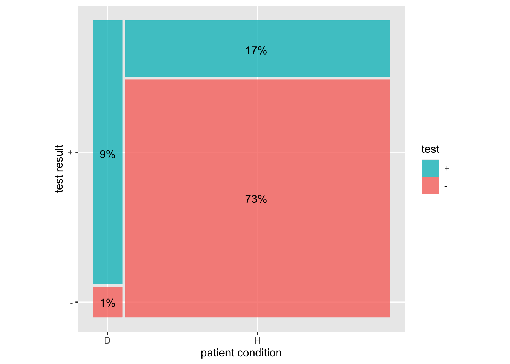

Define a hypothesis (in a statistical sense) as “a statement that might or might not be true.” This is really just a wordy way of saying, “a statement,” but we want to emphasize that the statement doesn’t have to be true. Examples of types of hypotheses we’ve encountered in this course:
- Models
- DAGs
But here we are interested in statments about the world, such as “the patient has congestive heart failure,” or (in an utterly different setting) “the aircraft is a threat.”
Define an argument (in the sense of critical thinking) as “reasoning to demonstrate the truth/falsity/credibility of a hypothesis.” The conclusion from an argument is a statement about the truth/falsity or credibility of a hypothesis.
In science, there are two main forms of argument:
Deductive reasoning where one starts with premises, that is, statements that are assumed to be true, and modify those statements using a mechanism that is generally accepted as correct. Example: Algebra where you start with an equation and then apply operations to both sides (e.g. multiply both sides by x) to create a new equation. Example: DAGs, where we learned the machinary to identify covariates that can block or open causal paths, and used this to decide which covariates ought be included in or excluded from a model.
Almost all of your math and science training has featured deductive reasoning, and you know how to check an argument to determine if you should believe the conclusion: a) check the premises for truth, b) check the mechanical steps of going from one statement to another.
Inductive reasoning where one starts with observations/data and moves to a conclusion about one or more hypotheses. (Inductive arguments generally contain premises such as models and DAGs and deductive reasoning.)
The setting for inductive reasoning we will work with involves two mutually exclusive hypotheses relevant to the question of interest, then using observations to reach a conclusion about the respective credibility of the hypotheses. Examples of mutually exclusive hypotheses: the patient has the disease versus the patient does not have the disease; the aircraft is a threat vs it is not a threat. (There are also important settings with multiple hypotheses, and the methods we’ll discuss are relevant to those settings, with more complicated book-keeping. For us, the two-hypothesis setting will suffice. Happily, many real-world situations correspond to the two-hypothesis deductive reasoning setting.)
The two-hypothesis setting is directly relevant to decision-making, insofar as heightened credibility in one of the hypotheses often corresponds to taking a particular action, for instance, medical treatment for a patient who has the disease.
The framework for deductive reasoning we consider first is exemplified by medical screening tests, such as testing for colon, breast, and prostate cancers. The two contending hypotheses will be labelled “D” and “H,” which you can think of as “disease” and “healthy” respectively.
- In this framework, much preliminary work (see Lesson 34) has been done before the test is applied to any patient. For instance, researchers have developed a testing method which might involve measuring antigen levels in blood or reading X-rays. The testing method amounts to a machine which takes the measurement of antigen levels or the X-ray and translates it into one of two results, a positive test result or a negative test result. Such a machine is called a classifier.
Once the classifier has been developed, applying it to a patient is an essentially automatic procedure that takes the patient as “input” and produces the test result (“positive” or “negative”) as output.
The question for the inductive reasoner is how to decide whether any given classifier accomplishes what you want, how to frame “what you want,” and how to interpret the result of the test. For instance, studies have shown that physicians and patients are likely to read something into the test result that is not at all justified. For instance, the women who test positive on a mammogram, and their physicians, often conclude that this is a definitive diagnosis, which is not at all the case.
In Lesson 34, we considered the perspective of the researchers who are developing a test. Refer to those notes for a refresher. The upshot of that lesson is that the proper way to describe the quality of performance of the test is with two numbers, each of which is a probability. These numbers are the sensitivity and specificity of the test. It’s important to understand that it takes two numbers to describe the test performance. Many people wrongly assume that only one number is required, the test accuracy. In reality, accuracy is a naive and incomplete concept and should not be used.
The patient comes in, the test is performed, and a result is found: positive or negative. Now we need to translate that result into the credibility level to be assigned to each of the hypotheses D and H. This is done by using ancillary information to calculate a probability level for hypothesis D. The probability level for hypothesis H will be the complement of that for D. For instance, if D has a 75% probability, H has a 25% probability.
What is the ancillary information needed to translate the positive-or-negative test result into a probability for D? In the setting of disease, this information is the prevalence of the disease. Prevalence is the fraction of the population who have the disease. (Which population is relevant to any given patient is a question of some importance, but for us, the prevalence is just a number between zero and 100%)
The three numbers needed to translate the positive/negative test result into a probability for the D hypotheses are:
- The sensitivity
- The specificity
- The prevalence
This diagram shows how to put these three numbers together to find the probability of hypothesis D given a positive test using a sensitivity of 90%, specificity of 80%, and prevalence of 10%.
The sensitivity is the proportion of the left (D) bar where the test is +. The specificity is the proportion of the right (H) bar where the test is -.
The prevalence is the proportion of the whole that is in the left (D) bar.
The probability of D given a + test is 9/(17+9)
The probability of H given a - test is 1/(73+1)